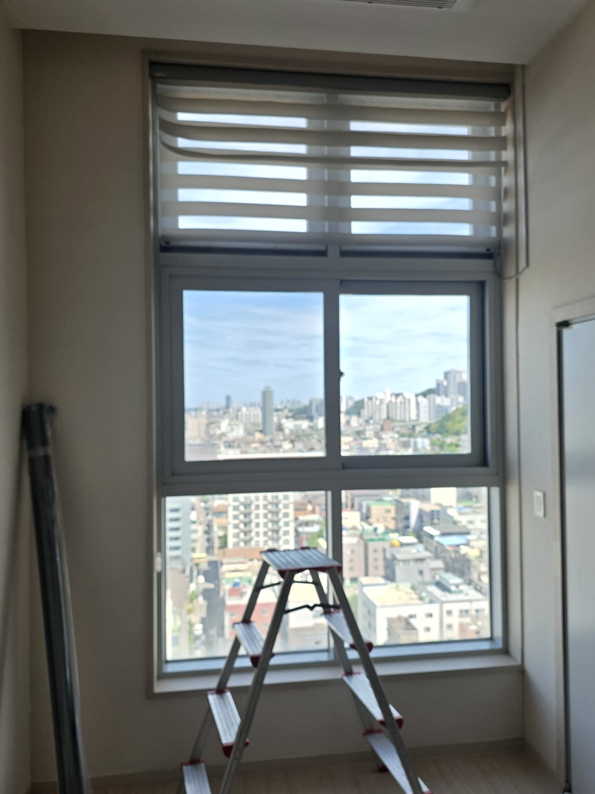
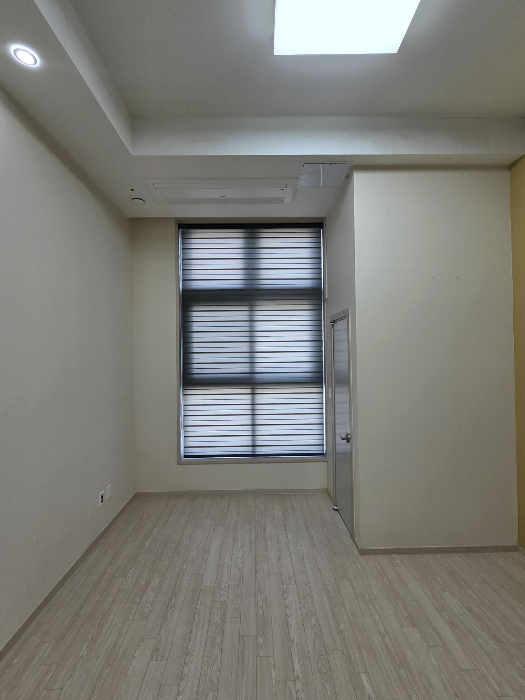

2026년 6월 7일 시공
포항 대잠동 오피스텔
진그레이 콤비블라인드 시공후기

포항 대잠동 오피스텔에 다녀왔습니다.
세입자를 들이기 전에 블라인드를 새로 바꾸고 싶다고, 임대인 사장님이 연락 주신 곳이었습니다.
가서 보니 왜 바꾸려 하셨는지 바로 알겠더라고요.
원래 달려 있던 블라인드가 햇빛에 오래 시달려 원단이 삭고 변색돼 있었습니다.
손으로 만지면 바스러질 정도라, 새 세입자를 맞기엔 아무래도 걸리는 상태였습니다.

임대 공간일수록 창가 첫인상이 중요합니다
오피스텔이나 원룸을 임대로 놓을 때, 세입자가 집을 보러 와서 의외로 먼저 눈이 가는 곳이 창가입니다.
벽지나 바닥이 멀쩡해도 창에 낡고 변색된 블라인드가 달려 있으면, 공간 전체가 관리가 안 된 느낌을 줍니다.
반대로 창가만 깔끔하게 정리돼 있어도 "관리가 잘 된 집"이라는 인상이 남습니다.
그래서 임대 공간은 블라인드 하나가 계약에 은근히 영향을 줍니다.
이 오피스텔은 천장이 높아 창이 시원하게 컸습니다.
창이 크면 블라인드도 눈에 확 들어와서, 낡은 게 달려 있으면 방 전체가 칙칙해 보입니다.
반대로 깔끔하게 바꿔 달면 큰 창이 오히려 방을 넓고 시원하게 보이게 하는 장점이 됩니다.
임대 공간에 콤비블라인드를 추천하는 이유
이런 오피스텔에는 콤비블라인드가 잘 맞습니다.
콤비블라인드는 비치는 원단과 빛을 막아주는 불투명 원단이 가로로 번갈아 배치된 구조입니다.
두 원단을 나란히 겹치면 은은하게 채광이 들어오고, 각도를 살짝 어긋내면 그 틈으로 들어오는 빛의 양을 조절할 수 있습니다.
완전히 겹쳐 내리면 불투명 원단끼리 맞물려 바깥 시선을 확실히 가려 줍니다.
이 모든 조절이 줄 하나로 되니, 누가 살아도 사용법이 어렵지 않습니다.
임대 공간은 세입자가 계속 바뀌기 때문에, 이렇게 직관적이고 관리가 쉬운 제품이 특히 잘 맞습니다.
색은 진그레이로 골랐습니다
색은 진그레이로 잡았습니다.
임대 오피스텔은 앞으로 누가 들어올지 모르니, 어느 가구·벽지에도 무난하게 어울리는 색이 안전합니다.
화이트는 때가 잘 타 보이고, 너무 어두운 색은 공간을 좁아 보이게 합니다.
그 사이에서 진그레이는 때도 덜 타 보이고, 밝은 벽지든 어두운 가구든 무난하게 받쳐 줍니다.
세입자가 몇 번 바뀌어도 오래 쓸 수 있는, 실용적인 선택입니다.

천장이 높아 사다리를 놓고 시공했습니다
창이 큰 만큼 윗부분은 사다리를 놓고 작업했습니다.
천장 높은 창은 블라인드를 거는 고정 장치(브래킷) 위치를 정확히 잡는 게 중요합니다.
조금만 틀어져도 블라인드가 삐뚤게 내려오거나 벽에 쓸리기 때문입니다.
창틀 라인에 맞춰 수평을 잡고, 큰 창이라 흔들림 없도록 고정을 단단히 했습니다.
높은 창은 손이 더 가지만, 다 달고 나면 라인이 시원하게 떨어져서 그만큼 값을 합니다.
낡은 블라인드를 걷어내고 진그레이로 새로 다니, 방 분위기가 눈에 띄게 정돈됐습니다.
사장님도 "이제 세입자한테 보여줘도 되겠다"며 좋아하셨습니다.
관리도 어렵지 않습니다
콤비블라인드는 평소 마른 먼지떨이로 가볍게 털어주면 됩니다.
얼룩이 생기면 물티슈로 살살 닦아내도 되고, 원단이 튼튼해서 오래 써도 잘 상하지 않습니다.
임대처럼 관리에 손이 많이 가면 안 되는 공간에 특히 잘 맞는 이유이기도 합니다.
오피스텔이나 임대 공간은 입주 일정이 촉박한 경우가 많은데, 그런 사정도 맞춰서 도와드립니다.
포항을 포함한 대구·경북·부산·울산·경남 전 지역, 낡은 블라인드 교체가 고민되시면 편하게 문의 주세요.
비슷한 시공